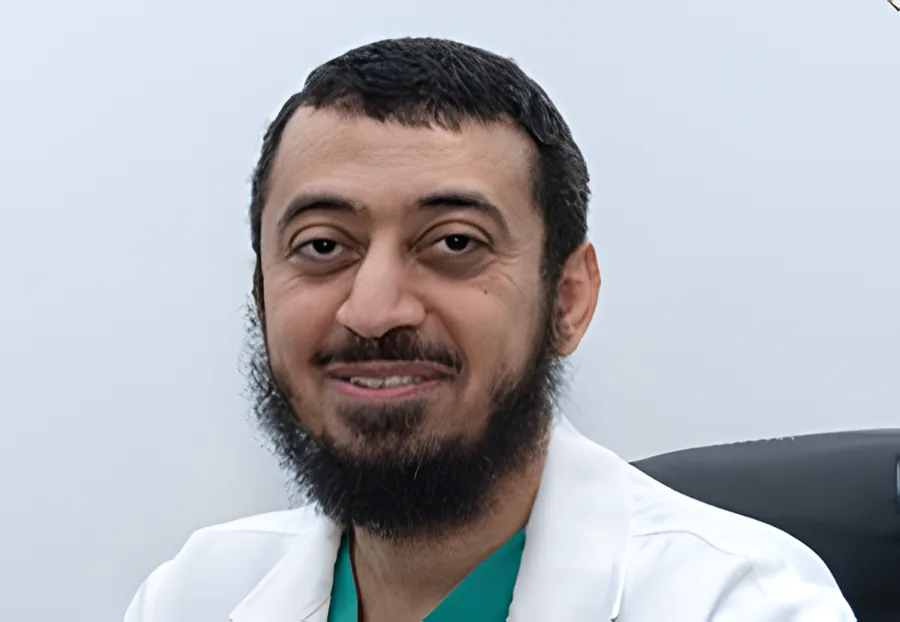
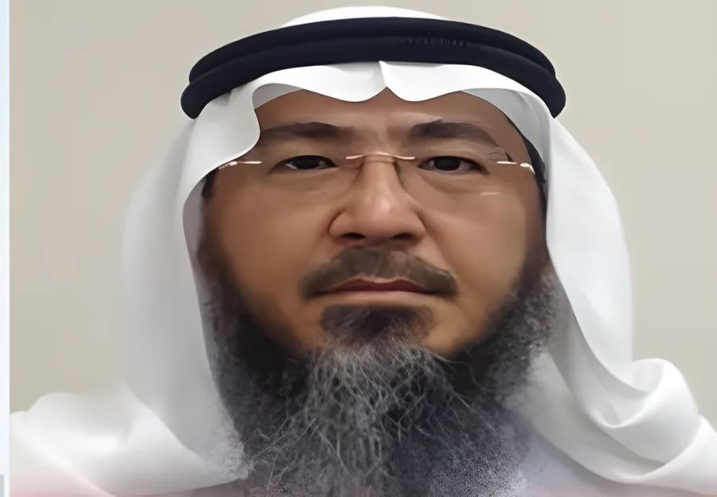
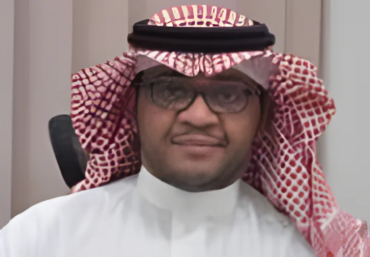

Our doctors
Twenty consultants and specialists. Ask reception for the doctor by name when you call, or tell them what's wrong and they'll book the right clinic.

 Dr Mohamed Al-Aminد. محمد الأمينDermatology & cosmetic dermatologyDoctorate in dermatology and cosmetology (Algeria); doctorate, University of Montpellier, France
Dr Mohamed Al-Aminد. محمد الأمينDermatology & cosmetic dermatologyDoctorate in dermatology and cosmetology (Algeria); doctorate, University of Montpellier, France Prof. Khalid Al-Omranأ.د. خالد العمرانPaediatrics, newborns & premature babiesProfessor of paediatrics and neonatology; Fellowship of the Royal College, Edinburgh
Prof. Khalid Al-Omranأ.د. خالد العمرانPaediatrics, newborns & premature babiesProfessor of paediatrics and neonatology; Fellowship of the Royal College, Edinburgh
Prof. Abdullah Al-Othmanأ.د. عبدالله العثمانOrthopaedic & spine surgeryFellowship of the Royal College of Surgeons Prof. Laila Al-Tilmisaniأ.د. ليلى التلمسانيEar, nose & throat surgeryFRCS Edinburgh (ENT); fellowship, University of Bern, Switzerland, in ear surgery and cochlear implants
Prof. Laila Al-Tilmisaniأ.د. ليلى التلمسانيEar, nose & throat surgeryFRCS Edinburgh (ENT); fellowship, University of Bern, Switzerland, in ear surgery and cochlear implants- Dr Fakhra Al-Qahtaniد. فاخرة القحطانيPaediatric kidney & diabetesConsultant paediatrician; Saudi Board; King Saud University fellowship in paediatric nephrology
- Dr Ahlam Al-Ghamdiد. أحلام الغامديObstetrics, gynaecology & fertilityFellowship, King Faisal Specialist Hospital, in assisted reproduction; Royal College fellowship, London, in keeping pregnancies
 Dr Abdullah Yousefد. عبدالله يوسفPaediatrics & children's chestSaudi and Arab Board in paediatrics; fellowship in children's chest diseases and asthma, Sydney
Dr Abdullah Yousefد. عبدالله يوسفPaediatrics & children's chestSaudi and Arab Board in paediatrics; fellowship in children's chest diseases and asthma, Sydney Dr Sulaiman Al-Mousaد. سليمان الموسىOrthopaedics & joint replacementCanadian Board in orthopaedic surgery; FRCSC; fellowship in foot and ankle surgery and joint replacement
Dr Sulaiman Al-Mousaد. سليمان الموسىOrthopaedics & joint replacementCanadian Board in orthopaedic surgery; FRCSC; fellowship in foot and ankle surgery and joint replacement
Dr Raed Al-Bukhariد. رائد البخاريRheumatology (adults)Canadian fellowship in rheumatology, University of Alberta; clinical allergy and immunology, University of Manitoba Dr Osama Al-Sultanد. أسامة السلطانHaematologyConsultant in internal medicine and blood diseases; fellowship, King Faisal Specialist Hospital
Dr Osama Al-Sultanد. أسامة السلطانHaematologyConsultant in internal medicine and blood diseases; fellowship, King Faisal Specialist Hospital Prof. Hatem Qutbأ.د. حاتم قطبChest medicineProfessor of chest medicine and adult critical care; Canadian fellowship
Prof. Hatem Qutbأ.د. حاتم قطبChest medicineProfessor of chest medicine and adult critical care; Canadian fellowship Prof. Saud Taha Al-Sharifأ.د. سعود طه الشريفUrology & andrologyGerman fellowship in urological surgery
Prof. Saud Taha Al-Sharifأ.د. سعود طه الشريفUrology & andrologyGerman fellowship in urological surgery- Prof. Qasim Al-Dawoodأ.د. قاسم الداوودFamily & community medicineConsultant; MSc in epidemiology and tropical medicine, University of London
 Dr Bassam Awariد. بسام عواريNewborn medicineConsultant paediatrician, subspecialty in newborns
Dr Bassam Awariد. بسام عواريNewborn medicineConsultant paediatrician, subspecialty in newborns Dr Abdulmohsen Al-Elqد. عبدالمحسن العلقInternal medicine, diabetes & hormonesProfessor of internal medicine; American College fellowship in endocrinology; International Osteoporosis Foundation certificate
Dr Abdulmohsen Al-Elqد. عبدالمحسن العلقInternal medicine, diabetes & hormonesProfessor of internal medicine; American College fellowship in endocrinology; International Osteoporosis Foundation certificate
Dr Nasser Al-Jizanد. ناصر الجيزانENT, head & neck surgeryAdenoid, vocal cord and head and neck surgery; fellowship, University of Bern, Switzerland Dr Mona Ashourد. منى عاشورEar, nose & throat surgeryConsultant; fellowship, University of Ulm, Germany, in cosmetic and functional nose surgery and sinus disease
Dr Mona Ashourد. منى عاشورEar, nose & throat surgeryConsultant; fellowship, University of Ulm, Germany, in cosmetic and functional nose surgery and sinus disease Dr Hussam Al-Juhaniد. حسام الجهنيBrain & spine neurosurgeryCanadian fellowship in neurosurgery; McGill University fellowship in cerebral angiography
Dr Hussam Al-Juhaniد. حسام الجهنيBrain & spine neurosurgeryCanadian fellowship in neurosurgery; McGill University fellowship in cerebral angiography- Dr Salma Al-Sharhanد. سلمى الشرهانEar, nose & throatConsultant; Yonsei University fellowship in nose and sinus surgery
- Dr Shatha Mahmoudد. شذى محمودOral & maxillofacial surgerySpecialist in oral and jaw surgery
Photos and qualifications as published by the clinic. Four doctors are shown with initials until we have their portraits.
Find us
Open nowTanami Tower, 1st floor, Prince Turki Street, Al Khobar
Opposite Al-Fowzan Tower and the Mercure Hotel.
| Saturday | 8am – 9pm |
| Sunday | 8am – 9pm |
| Monday | 8am – 9pm |
| Tuesday | 8am – 9pm |
| Wednesday | 8am – 9pm |
| Thursday | 8am – 9pm |
| Friday | Closed |
info@elite-clinics.net · P.O. Box 4231, Al Khobar 34423
Tanami Tower, Prince Turki Street